This demo only works in browsers that support CSS Grid Layout. If you can see this message, then your browser isn't supporting Grid. You can try out Grid in
Firefox Nightly
or
other browsers by flipping a flag
.
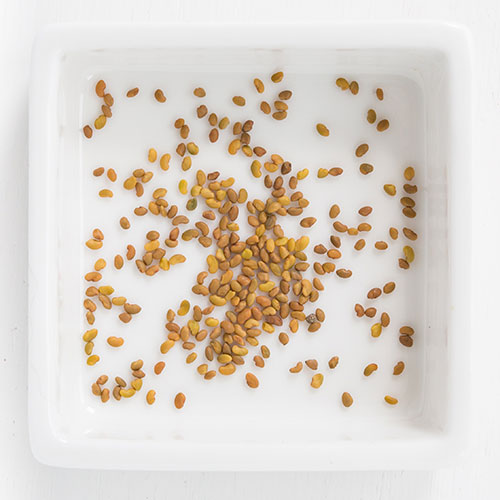
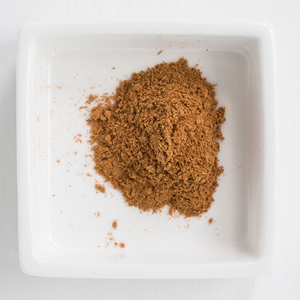
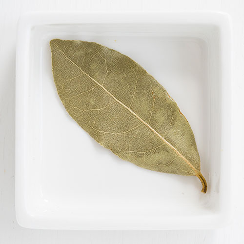
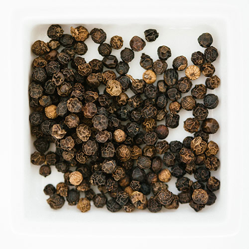
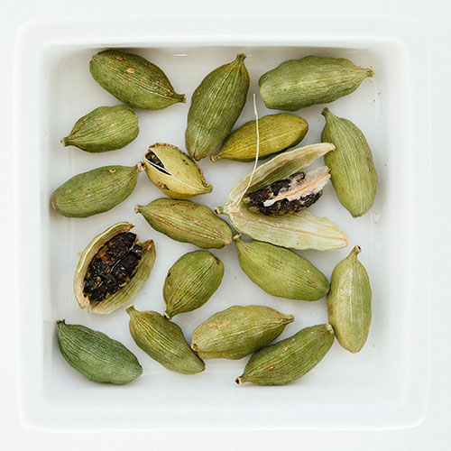
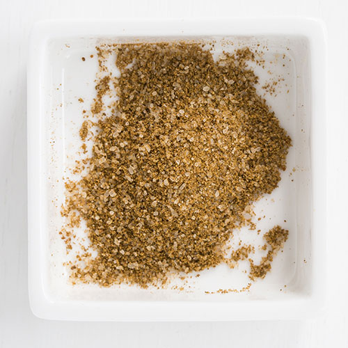
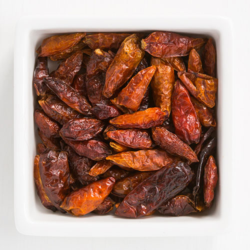
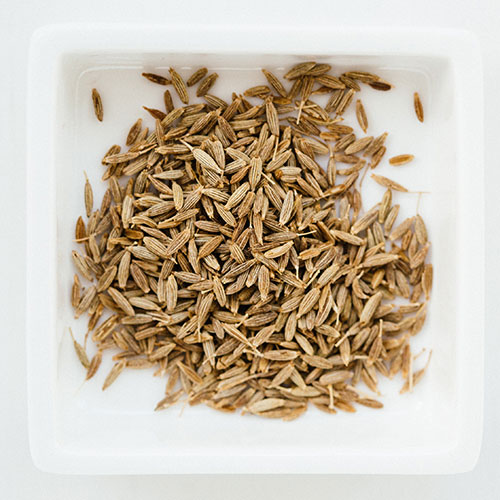
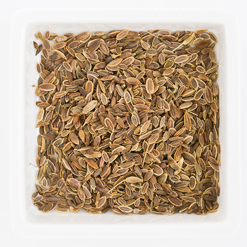
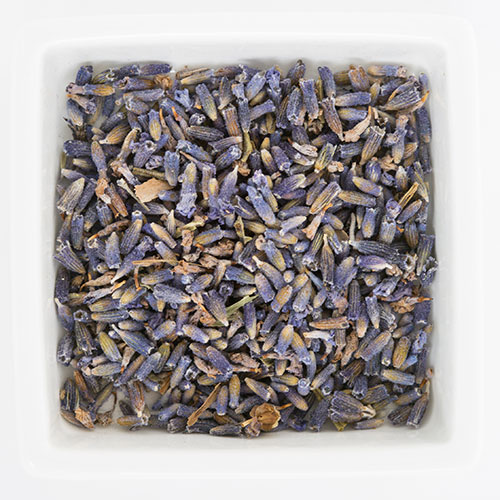
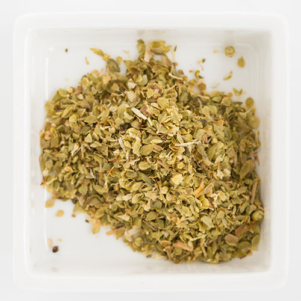
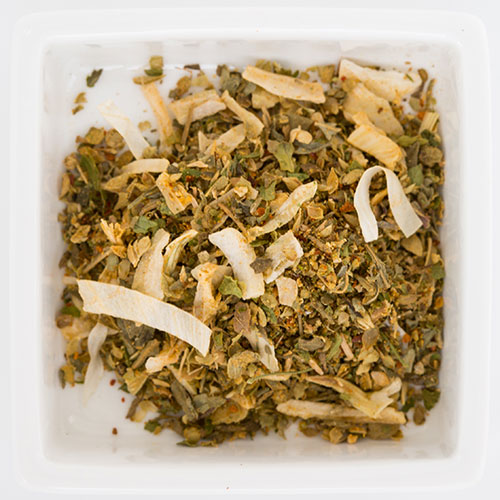
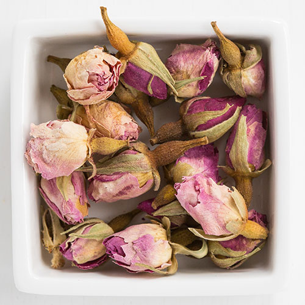
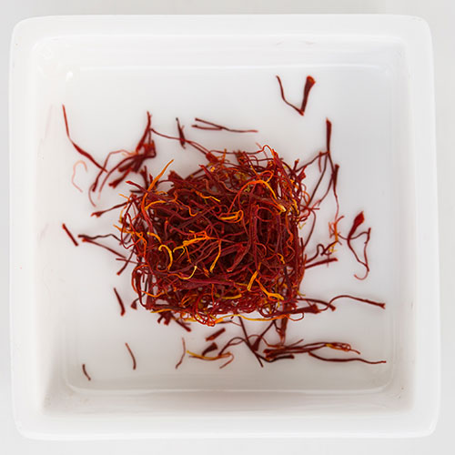
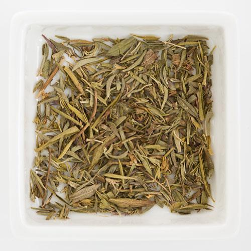
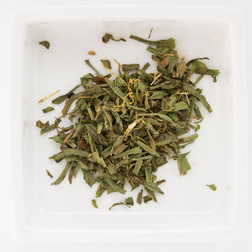
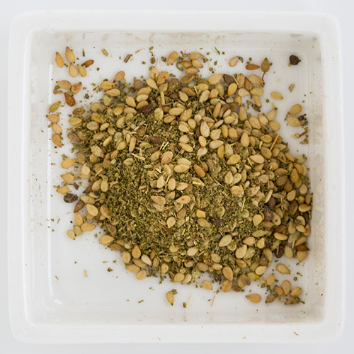